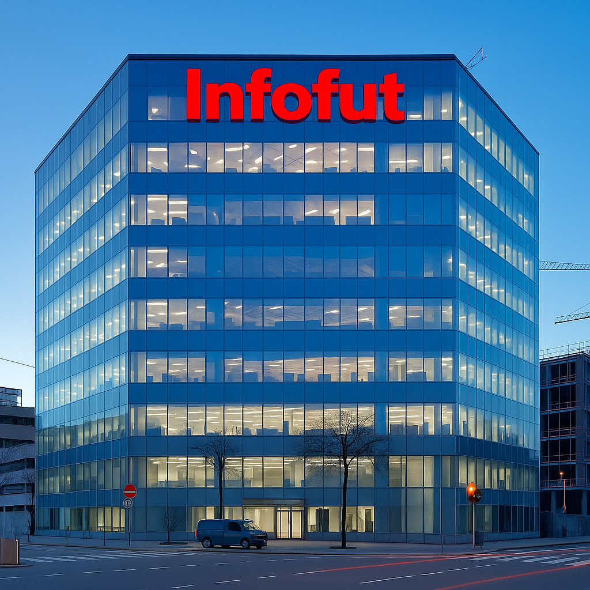
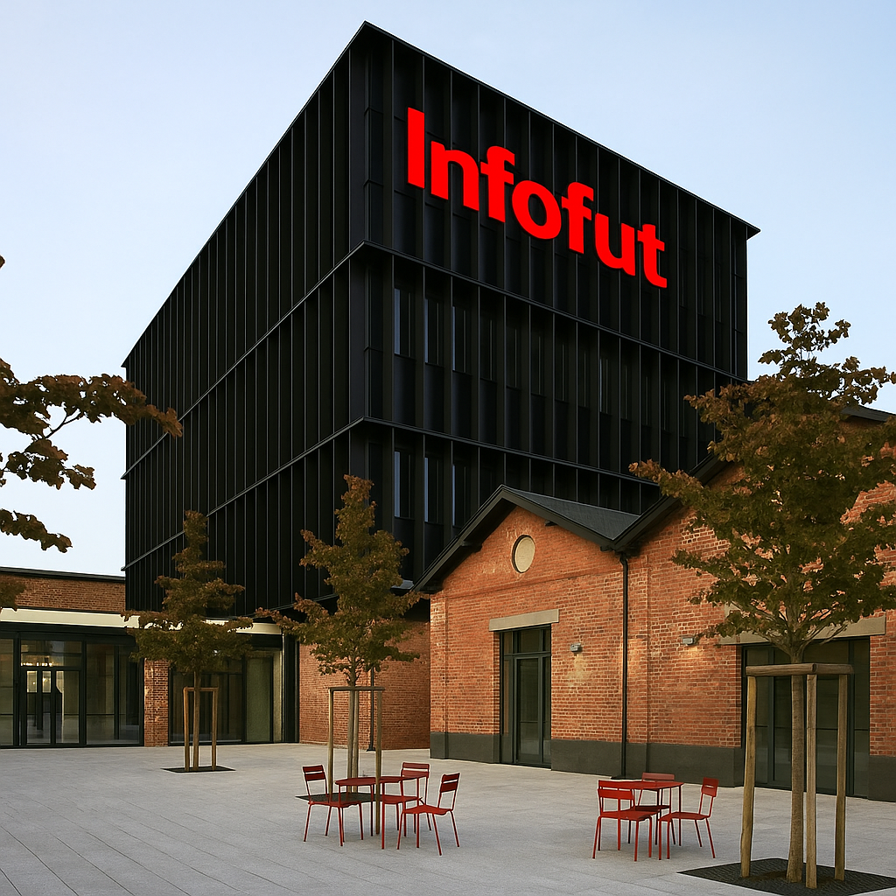
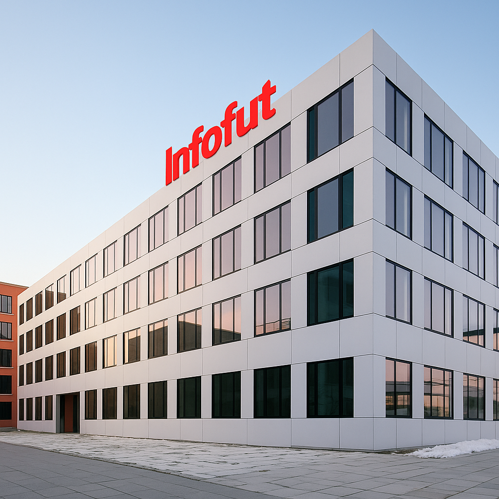
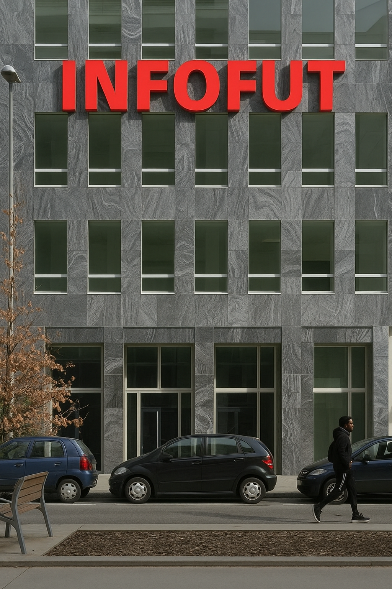
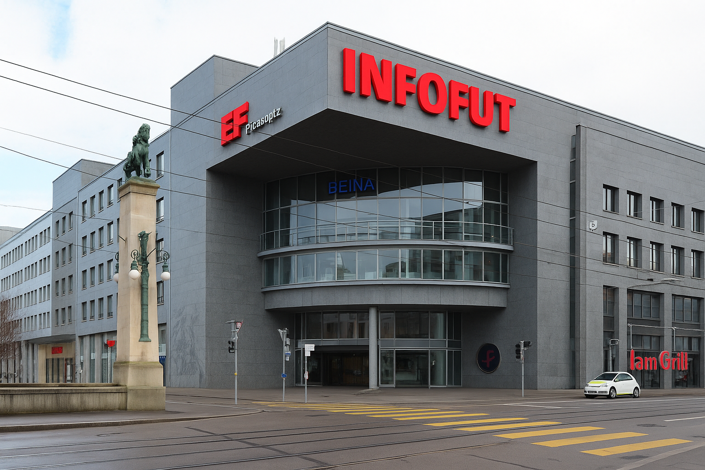

Esta es nuestra sede de Barcelona, al ser la primera y donde se maneja toda la información, es la más grande. Consta de 45 oficinas, más sala de desconexión, cafeteria, sala de reuniones y parking

La sede de Milan, no es la más grande pero también esta muy bien, con 18 oficinas, 2 salas de reuniones, patio de descanso, cafeteria y parking

La sede de Munich es una sede que mas que trabajo se basa en archivar información, su función es clasificar y ordenar y a raiz de ahí informa. Consta de 15 oficinas, sala de reunion, cafeteria interior, sala de desconexión y parking

Nuestra sede de Paris es la más pequeña ya que paris lo utilizamos sobre todo para las zonas de redactar de los periodistas, para nada más, los periodistas van a entrevistar y luego en esas oficinas redactan, esa es su función principal. Consta de 7 oficinas, tres sala de reuniones, parking y cafeteria.

Tenemos esta gran sede en Londres, es la segunda más grande ya que el mercado de Inglaterra esta muy movido, estos últimos 10 años la liga inglesa ha ido mejorando y ahora toda la gente que le guste el futbol quiere saber lo que pasa en Inglaterra. Contsa de 32 oficinas, dos sala de euniones, sala de descanso, cafeteria, parking y una terraza.